Learning Objectives for this Session
At the end of this session you should be able to
- Understand statistical associations between continuous variables
- Understand statistical associations between a continuous and a binary variable
- Visualize ways to identify associations
- Basic understanding of correlation and t-tests
EDA with continuous variables
We saw bar plots and proportional plots used to visualize binary and categorical variables in the previous section. What are some good ways of visualizing continuous (quantitative) data? Let’s use the NHANES data set to visualize the variable BMI as a continuous variables.
(Note info about the NHANES data in the NHANES package can be found here with the disclaimer that NHANES are survey data so to do proper analyses we should use sampling weights. For illustration of more straightforward analyses we will ignore this detail.)
A common visualization of the distribution of a continuous variable is a histogram (or the smoothed version—the density plot):
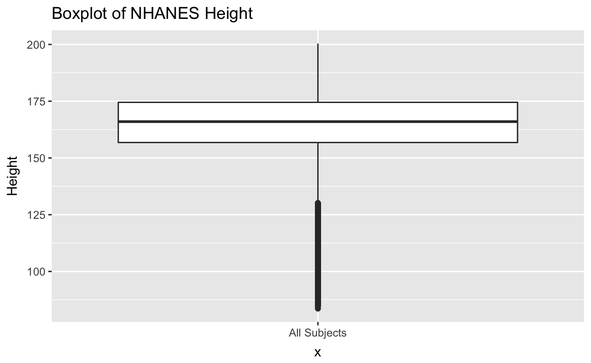
This plot shows us the frequency of certain values of BMI. We can see the distribution is somewhat “skewed” in that there are a few quite large values on the right tail of the distribution.
- This is something to think about, data is not always a perfect bell shaped (Normal distribution) curve!
We can also use a boxplot to see similar patterns. The help from the boxplot R function ?geom_boxplot tells us what all the parts of the boxplot mean:
“The lower and upper hinges correspond to the first and third quartiles (the 25th and 75th percentiles). This differs slightly from the method used by the boxplot function, and may be apparent with small samples. See boxplot.stats for for more information on how hinge positions are calculated for boxplot.
The upper whisker extends from the hinge to the largest value no further than 1.5 x IQR from the hinge (where IQR is the inter-quartile range, or distance between the first and third quartiles). The lower whisker extends from the hinge to the smallest value at most 1.5 x IQR of the hinge. Data beyond the end of the whiskers are called “outlying” points and are plotted individually."
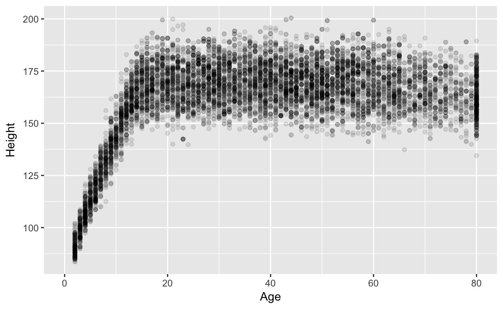
All those dots piled up on the bottom are people who are outside the 1.5 x IQR, often though of as “outliers” of the population distribution. This also shows the positive skewness of the distribution.
How do we assess associations between two continuous variables
We learned that good EDA can help us identify associations.
The first visualization you are likely to make when you have two continuous variables is a scatterplot. Let’s look at the scatterplots of Height and Weight vs. BMI.
- How would you describe these relationships?
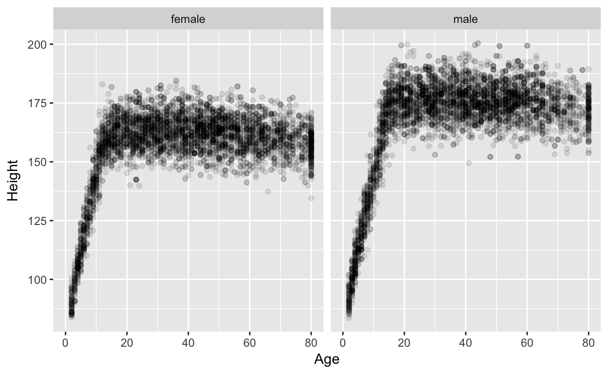
A simple statistical quantification of the association of two continous variables is the Pearson’s Correlation Coefficient (often labeled r). Note that this is quantifying a linear relationship. If the relationship is relatively curved or exponential it will not capture this relationship. An alternative might be the Spearman’s correlation which basically is the Pearson’s correlation of the ranks. This looks for monotone relationships.
- How well does the line “fit” the data?
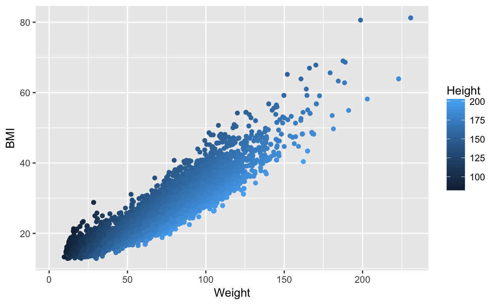
Now you can try to get a feel for what correlation (linear and non-linear) looks like. Try a few pairs:
What is a factor that may be associated with BMI?
We learned that good EDA can help us identify associations. How does BMI differ by Diabetes status?
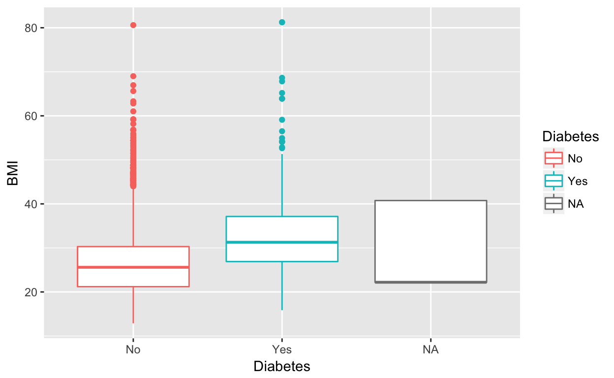
We see that BMI is on average higher for subjects with diabetes than without. There is also a third category called NA. This means the data is missing.
Let’s explore the missingness in this data a bit before we move on.
Missingness and suspicious data elements
We can summarize the data with missing diabetes status:
NHANES %>% filter(is.na(Diabetes)) %>% select(ID, Diabetes, BMI, Age) %>% summary## ID Diabetes BMI Age
## Min. :51962 No : 0 Min. :22.20 Min. : 0.000
## 1st Qu.:56531 Yes : 0 1st Qu.:22.20 1st Qu.: 0.000
## Median :60664 NA's:142 Median :22.20 Median : 0.000
## Mean :61524 Mean :29.62 Mean : 1.197
## 3rd Qu.:66501 3rd Qu.:40.76 3rd Qu.: 0.000
## Max. :71910 Max. :40.76 Max. :67.000
## NA's :137Note that 137 out of 142 subjects with missing diabetes data also have missing BMI data. Also note the Age distribution. Does something look interesting?
What about missingness in BMI? How does this relate to age? We can use the naniar package in R to visualize this with a scatterplot:
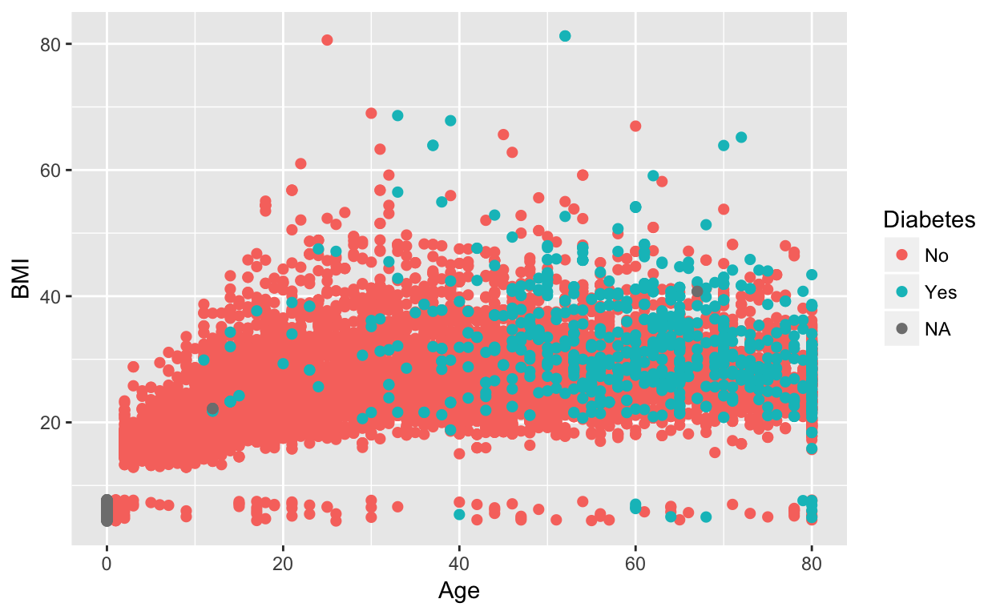
We also might notice something interesting about the age distribution of our population.
For future analyses, let’s work with subjects older than 20 years of age, and remove subjects with missing Diabetes and BMI values. Lastly, let’s check out the boxplots on this filtered data.
nhanes_filtered = NHANES %>% filter(Age >= 20, !is.na(Diabetes), !is.na(BMI))
nrow(nhanes_filtered)## [1] 7170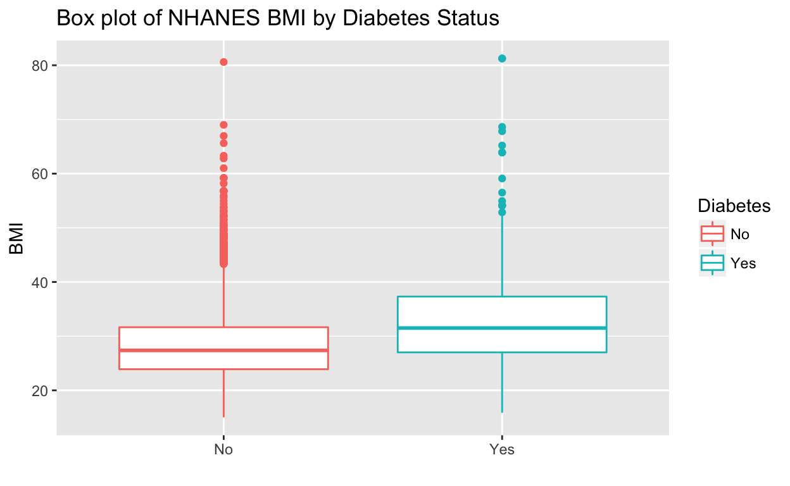
BMI ~ Diabetes, Gender, and ?
Gender is another factor that might influence BMI.
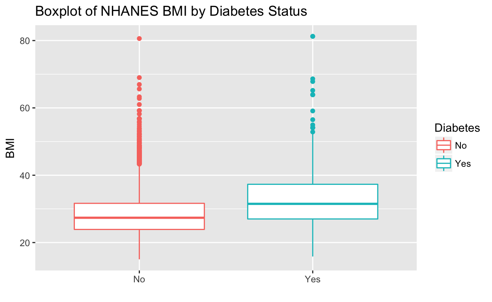
How does the effect of diabetes change with gender?
- When the magnitude of the effect of diabetes changes between subgroups of another variable like gender, we put on our epidemiologist hats and call gender an “effect modifier.”
- As a statistician we think “interaction!”
We need to be more careful, though! We also know the pregnancy status of some of our subjects.
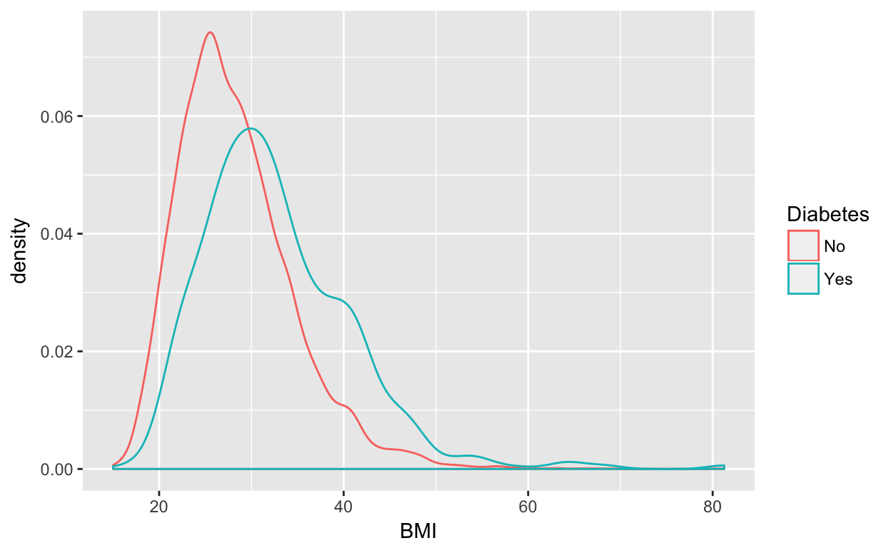
We should probably remove the pregnant women if we want to look at other factors related to BMI, since they have higher BMI on average.
## [1] 7098
The change in the effect of diabetes when stratifying by gender is less pronounced, now.
T Test
The most common statistical test to compare the distribution of continuous variables across a binary (Yes/No) variable (like diabetes) is the two sample Student’s T Test. It is so named because the test statistic—which quantifies how different the means are in relation to the variance—follows a T-distribution. The T-distribution is like the normal bell shaped curve but with “fatter tails”.
The T test makes assumptions about the distribution of your continuous variable within the two groups:
- The measure (BMI) follows a normal distribution with a certain mean and variance within each set (group).
- The two sets (groups) of data are independent. (BMI for non-diabetes patients is normally distributed, BMI for yes-diabetes patients is also normally distributed). If we have some kind of relationship (i.e. matching, or measured on the same subjects) we need to use a “paired T test.”
The null hypothesis is that the two group means are equal. We are trying to reject this null hypothesis to show the group means are NOT equal.
Let’s look at the smoothed histograms (density plots) of the two groups’ BMIs.
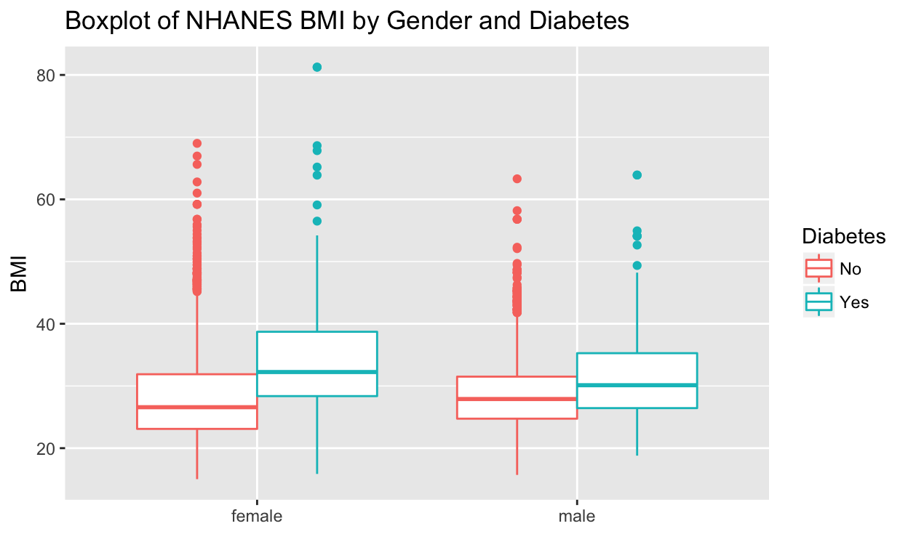
Do we think the assumptions of the t-test hold?
Let’s run a t-test:
## BMI ~ Diabetes
## <environment: 0x7fdccc78f230>| Difference in Means | Means No | Means Yes | T Statisitic | P Value |
|---|---|---|---|---|
| -6.4 | 26.16 | 32.56 | -20.83 | 3.9e-78 |
Note the p-value is extremely small. This is because we have a very large sample size and the difference in means is pretty large.
What happens if we have a much smaller sample size? We can examine the effect of sample size by randomly sampling a subset of the data:
WORKING ON
Other factors
What other factors might we separate on? Let’s just look at adults (age >= 20):
Prediction
We can visualize a other continuous variables similarly. For instance, total cholesterol (TotChol).
Predict weight or total cholesterol? Factors to color by: Diabetes, PhysActive, Smoke100?

Fit a model
What to do here?
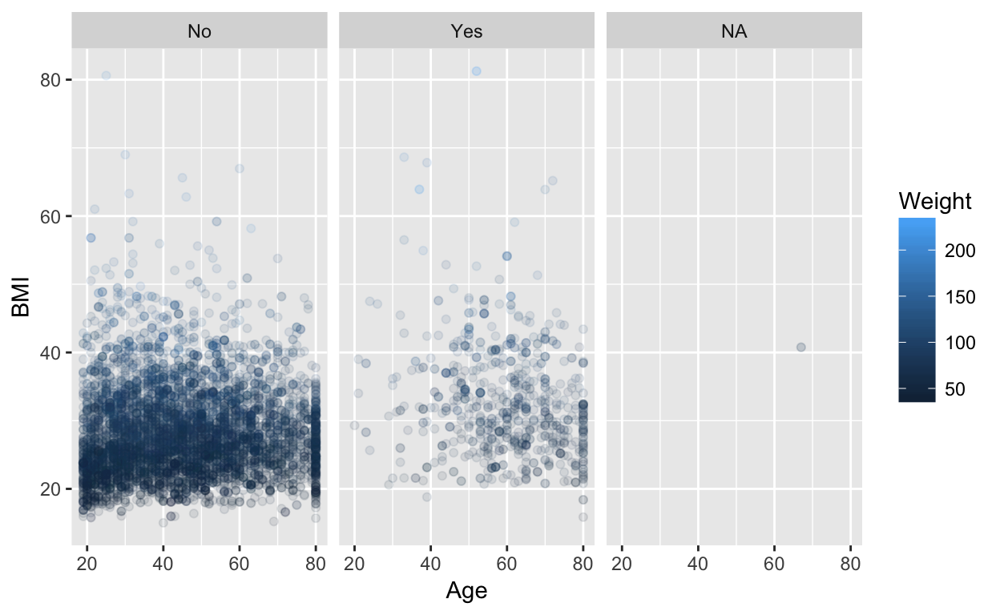
##
## Call:
## lm(formula = BMI ~ Diabetes * Gender, data = nhanes_filtered)
##
## Residuals:
## Min 1Q Median 3Q Max
## -18.190 -4.518 -1.018 3.417 47.200
##
## Coefficients:
## Estimate Std. Error t value Pr(>|t|)
## (Intercept) 28.1177 0.1136 247.532 < 2e-16 ***
## DiabetesYes 5.9327 0.3681 16.117 < 2e-16 ***
## Gendermale 0.3455 0.1621 2.132 0.0331 *
## DiabetesYes:Gendermale -2.8280 0.5058 -5.592 2.33e-08 ***
## ---
## Signif. codes: 0 '***' 0.001 '**' 0.01 '*' 0.05 '.' 0.1 ' ' 1
##
## Residual standard error: 6.466 on 7094 degrees of freedom
## Multiple R-squared: 0.04581, Adjusted R-squared: 0.0454
## F-statistic: 113.5 on 3 and 7094 DF, p-value: < 2.2e-16##
## Call:
## lm(formula = BMI ~ PhysActive + SmokeNow + Diabetes * Gender +
## Race3 + BPSysAve + BPDiaAve, data = nhanes_filtered)
##
## Residuals:
## Min 1Q Median 3Q Max
## -16.7708 -4.1737 -0.7635 3.4081 23.7070
##
## Coefficients:
## Estimate Std. Error t value Pr(>|t|)
## (Intercept) 23.796992 1.456128 16.343 < 2e-16 ***
## PhysActiveYes -1.877109 0.310053 -6.054 1.78e-09 ***
## SmokeNowYes -2.038572 0.312892 -6.515 9.89e-11 ***
## DiabetesYes 6.034177 0.777457 7.761 1.55e-14 ***
## Gendermale 0.567713 0.324956 1.747 0.080835 .
## Race3Black 4.290933 0.973161 4.409 1.11e-05 ***
## Race3Hispanic 3.630647 1.065898 3.406 0.000676 ***
## Race3Mexican 5.252442 1.011958 5.190 2.39e-07 ***
## Race3White 2.969148 0.842142 3.526 0.000435 ***
## Race3Other 4.319276 1.208549 3.574 0.000363 ***
## BPSysAve -0.011454 0.009193 -1.246 0.213008
## BPDiaAve 0.054282 0.012688 4.278 2.01e-05 ***
## DiabetesYes:Gendermale -4.048358 0.964221 -4.199 2.84e-05 ***
## ---
## Signif. codes: 0 '***' 0.001 '**' 0.01 '*' 0.05 '.' 0.1 ' ' 1
##
## Residual standard error: 5.736 on 1493 degrees of freedom
## (5592 observations deleted due to missingness)
## Multiple R-squared: 0.1266, Adjusted R-squared: 0.1196
## F-statistic: 18.03 on 12 and 1493 DF, p-value: < 2.2e-16##
## Call:
## lm(formula = BMI ~ Diabetes * Gender + Smoke100n + PhysActive +
## Age + Race3 + BPSysAve + BPDiaAve, data = nhanes_filtered)
##
## Residuals:
## Min 1Q Median 3Q Max
## -16.219 -4.179 -0.921 3.334 38.562
##
## Coefficients:
## Estimate Std. Error t value Pr(>|t|)
## (Intercept) 19.351268 0.959102 20.176 < 2e-16 ***
## DiabetesYes 6.341165 0.520631 12.180 < 2e-16 ***
## Gendermale 0.407691 0.224857 1.813 0.069902 .
## Smoke100nSmoker -0.833277 0.218079 -3.821 0.000135 ***
## PhysActiveYes -1.299140 0.218181 -5.954 2.88e-09 ***
## Age -0.007238 0.007382 -0.980 0.326940
## Race3Black 4.977960 0.542202 9.181 < 2e-16 ***
## Race3Hispanic 3.932748 0.601803 6.535 7.31e-11 ***
## Race3Mexican 4.620168 0.585135 7.896 3.86e-15 ***
## Race3White 3.429644 0.458419 7.481 9.30e-14 ***
## Race3Other 4.794830 0.797607 6.012 2.03e-09 ***
## BPSysAve 0.016798 0.007453 2.254 0.024264 *
## BPDiaAve 0.062662 0.009685 6.470 1.12e-10 ***
## DiabetesYes:Gendermale -3.549401 0.694610 -5.110 3.40e-07 ***
## ---
## Signif. codes: 0 '***' 0.001 '**' 0.01 '*' 0.05 '.' 0.1 ' ' 1
##
## Residual standard error: 6.105 on 3405 degrees of freedom
## (3679 observations deleted due to missingness)
## Multiple R-squared: 0.1137, Adjusted R-squared: 0.1104
## F-statistic: 33.62 on 13 and 3405 DF, p-value: < 2.2e-16##
## Call:
## lm(formula = BMI ~ Diabetes + Gender + Race3 + Smoke100n + PhysActive,
## data = nhanes_filtered)
##
## Residuals:
## Min 1Q Median 3Q Max
## -14.159 -4.206 -0.827 3.119 38.406
##
## Coefficients:
## Estimate Std. Error t value Pr(>|t|)
## (Intercept) 25.6831 0.4615 55.653 < 2e-16 ***
## DiabetesYes 4.3320 0.3477 12.458 < 2e-16 ***
## Gendermale 0.2961 0.2092 1.416 0.156969
## Race3Black 4.9112 0.5315 9.240 < 2e-16 ***
## Race3Hispanic 3.5352 0.5887 6.005 2.11e-09 ***
## Race3Mexican 4.3093 0.5738 7.510 7.43e-14 ***
## Race3White 3.3508 0.4508 7.433 1.33e-13 ***
## Race3Other 4.3720 0.7823 5.589 2.46e-08 ***
## Smoke100nSmoker -0.8069 0.2150 -3.753 0.000177 ***
## PhysActiveYes -1.3185 0.2118 -6.225 5.40e-10 ***
## ---
## Signif. codes: 0 '***' 0.001 '**' 0.01 '*' 0.05 '.' 0.1 ' ' 1
##
## Residual standard error: 6.147 on 3522 degrees of freedom
## (3566 observations deleted due to missingness)
## Multiple R-squared: 0.08631, Adjusted R-squared: 0.08398
## F-statistic: 36.97 on 9 and 3522 DF, p-value: < 2.2e-16Resources and extra practice
To learn more R coding and a bit more about EDA and statistical analysis, try out our Data Camp course: